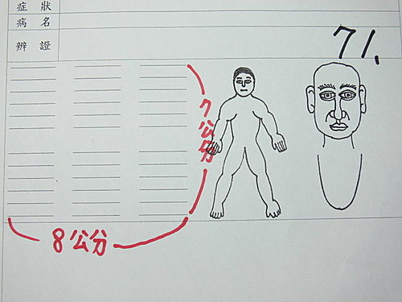
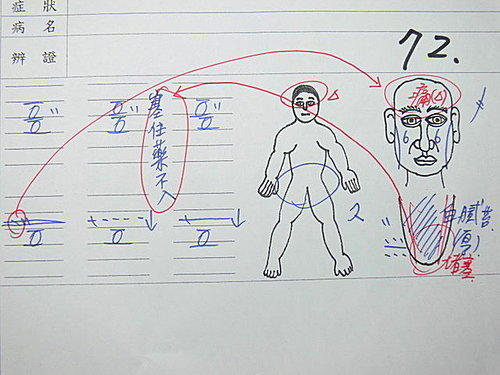
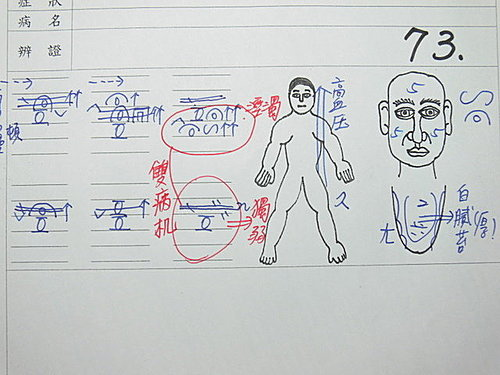
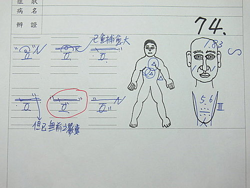

脈理醫理學 74：藥王脈學使用的獨特記錄方式——藥王脈圖（八）以脈圖看診時會花費掉多少時間？實際流程如何安排？
作者：陳建元
脈診需要詳細記錄結果（尤其第一診），不記錄的話等於每一次都要重頭看一遍一樣，浪費的時間更多。但若要詳細記錄的話（藥王脈學中有30個脈位，並且比對其大小強弱），每次一個人的六部脈詳情就需要寫700～800字才能完整表達（太龐大，記錄耗時，閱讀及解讀都不方便），這將對臨床造成極大的不便與困擾，為了能在4～5分鐘的診療過程中可以完整的收錄所有的脈象資訊，並方便清楚的顯示病機，及第2、3診 延續銜接的方便性，達到速（書寫迅速）、解（理解快速）、明（病機明顯）、準（病機準確）、齊（病機齊全）、比（比對方便）、順（銜接順利）的目的。藥王脈學中捨棄自古以來都是以文字敘訴表達脈象資訊的方式，改用脈圖的速記方法，這種方法絕對是需要的，唯有如此臨床水平才能快速起飛。
一張脈圖實際運作時需要多少時間？能不能配合在4～5分鐘內（健保制度）看完？
答案是這樣：因為把字換成流利的快速符號，所以基本上如果只算單純書寫的時間，大部分的狀況下所有的符號在1分鐘內能被記載完畢，換言之，就是相當於700～800字的的龐大脈象資訊，利用脈圖記錄的方法，能在1分鐘內被詳細記載完畢。
但在實際的運用流程上，脈圖並不是單獨運作的，它是依附在整個望聞問的過程中同時重疊運作的，換言之，一張脈圖多久可以寫完是不一定的，你的診療時間過程有多長，脈圖完成的時間就有多長，如果你複診需要1～2分鐘，初診需要7～8分鐘，複雜的左思右想的需要更長的時間的話，那脈圖也在相同的時間內被完成。換言之，單純書寫的時間並不長，是診療的時間才長，診療多久脈圖就畫多久，診療完畢代表脈圖已畫完並以鎖定病機。
一般如果是慣用右手者，使用的方法一般是左手診脈，右手同時書寫記載脈圖或對照上次與這次脈象上的差異性，同時嘴巴問診，並由脈象上的訊息發問題問患者，除了起頭是問患者要看什麼抓個大方向外，中間由脈象上對患者所提出的問題並不是用十問歌亂槍打鳥，而是有目的的發問，目的都是為了鎖定病機而發問的。譬如：妳頭會痛喔？上次嘴破消失了喔？現在快月事了喔？平常量很少喔？來的時候有血塊喔！這些問題是從脈象中找出來的，並不是十問歌。但問診的時候右手是不停在畫脈圖的，所以畫脈圖的時間和整個診斷時間是重疊的，並不需要花費額外的時間。
必須特別指出：這種由脈圖上互相比對而發現異樣提出的問診內容，和用十問歌所問的內容是絕對不一樣的，效果也絕對不一樣，脈圖上提出的問題有一箭三鵰的效果，兼具確定病機和取得病人信賴，醫生在脈——病機——治則——方藥，即理法方藥上的更進一步深刻認識與學習的三重功用。下面是敘述上面這幾個問題提出來後，病人和醫生心中不同的感受和盤算：
病人方面：（紅色字）
妳頭會痛喔？（咦！怎麼知道我頭痛，這醫生不錯！）
上次嘴破消失了喔？（對啊，這醫生厲害！）
現在快月事了喔？（連這個都知道，這醫生真神！）
平常量很少喔？（醫生，你家電話幾號？可以給我嗎？）
來的時候有血塊喔！（醫生，我要嫁給你啦！）
醫生方面：（綠色字）
妳頭會痛喔？（肺脈那麼浮緊，再確定一下是風寒，好下解表藥）
上次嘴破消失了喔？（本次比對後脾脈的洪脈已經消失，切～～上次故意下大量的石膏，我就不信妳是鐵胃，脾熱還不消失）
現在快月事了喔？（把到月事將來脈，但我現在要治外感啊，如果遇到月事恰來，恐怕還是需要稍佐補血藥，解表藥發散後才不會太虛）
平常量很少喔？（兩尺那麼弱，後援儲備量那麼少，月事量必少。恐怕感冒藥中我還是要稍補兩尺一下，以免免疫恢復力太弱）
來的時候有血塊喔！（兩尺又帶澀脈，看來沒有稍加活血藥的話，血脈不是很通暢，感冒可能又會拖很久）
注意一下，上面的綠色字也可以很清楚的看到，用脈圖這種方法提出的問診問題，同時每一次也都是在複習加深醫生本身對整個疾病治療過程的反回饋、認識掌握、和本身實力的提高，這是直接跟身體做對話，並可以印證歷代學說的真與偽。
實際運用脈圖時，並不是畫的如同上面幾篇所畫的那麼大篇那麼精緻漂亮，那是為了講解方便故意畫給大家看的。病例表的格式很多種，底下只是其中的一種範例，脈圖所佔的空間不用太大，7～8公分見方即可。〈圖71〉。

〈圖72、圖73、圖74〉是一些實際脈圖運作的範例，在面部頭像中的某些地方被寫上數字，這是望診的圖譜，用來和脈圖合看相比對用的，上面的數字和特殊符號也是用來取代冗長的文字，記載不同的面色和氣色的一些特殊情況。望診頭像的右耳邊又有一些符號，這是聞診的符號，〈圖72〉是代表這個人的說話聲音燥而沙啞，〈圖73〉是代表這個人的說話聲音痰濁但洪亮，〈圖74〉是代表這個人的說話聲音痰濁不清音很明顯。



【引用請先來信告知徵求同意，若有涉及販售營利等商業行為，版權所有拷貝盜用必究。】
【藥王脈學講壇】http://blog.xuite.net/drjychen/twblog